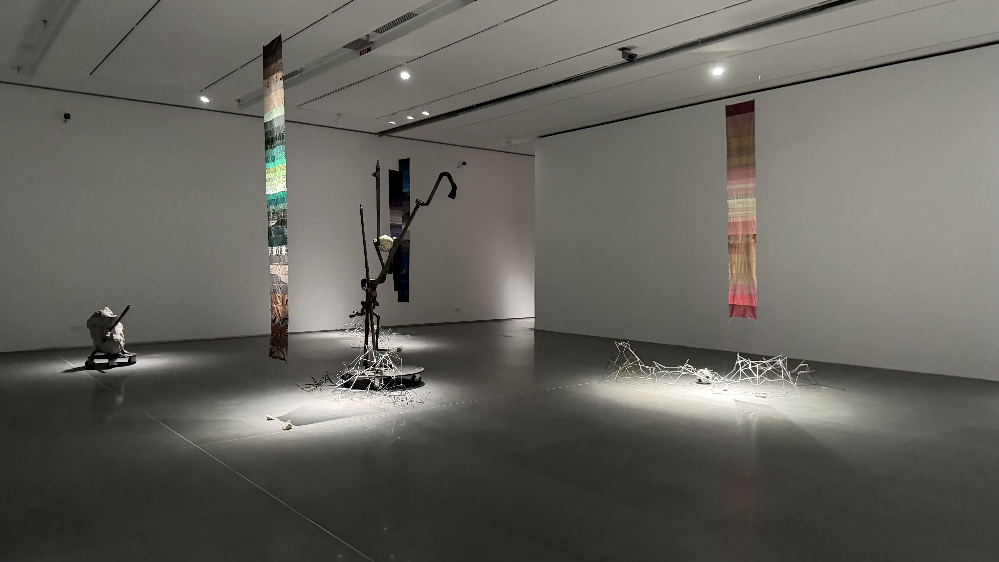
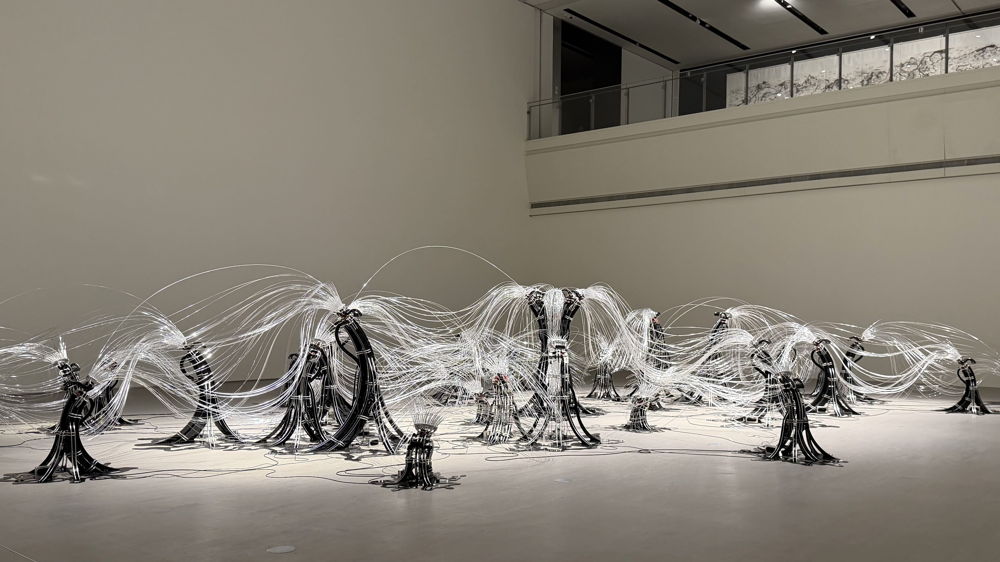
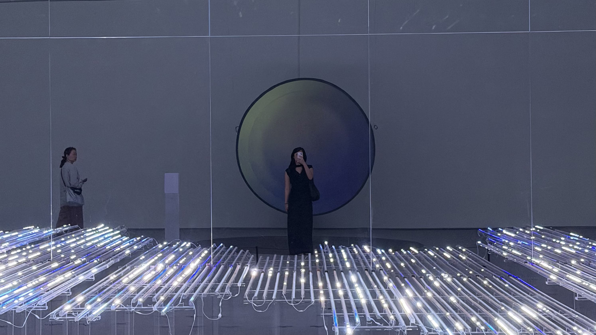

Week 1 · Semester 1
Making the Mechanism Visible

Where this started
In Year 2, I explored AI-assisted coding to understand agency and authorship. After finishing the paper, I realized I was far more curious about the interaction process itself.
That curiosity grew out of a second brief I ran: the first asked designers to follow a fixed reference, but the second was completely open. The open brief yielded vastly more varied results, and that variation seemed to depend directly on how each designer uniquely negotiated their interaction with the AI.
Why Shenzhen
I took a trip back home to Shenzhen, expecting to see advanced tech and computing infrastructure. What actually surprised me was their prototyping speed. Materials like acrylic can be sourced locally in a day or two, allowing people to test ideas immediately without weeks of upfront planning being recognised more and more, at this scale.
I also visited The 1st Shenzhen Art & Technology Biennale ("A Glimpse of the Infinite" at the new Shenzhen International Museum of Art / SIMoA). The three-story exhibition featured international tech artists pushing creative boundaries. Seeing computational design recognized at this scale inspired me and proved how expansive this field really is.


Precedent
Illusionary Light by Yang Hongyan
My favorite piece was Illusionary Light by Yang Hongyan. At first glance, it appeared ethereal, with light illuminating the space in a delicate way. Looking closer, the setup was surprisingly simple: colorful acrylic shapes projected and reflected onto the wall by a visible mechanism.
Without that exposed mechanism, the work wouldn't have been as compelling. It reminded me that complexity isn't required—careful design and intention are what matter.
Just as the exposed mechanism was essential to Illusionary Light, I want the underlying process of interacting with AI to be part of the final work I display.
Illusionary Light Yang Hongyan, The 1st Shenzhen Art & Technology Biennale, SIMoA.
Moving Forward
Week 1 was a gentle introduction to Year 3 expectations. Traveling allowed me to gauge the current design landscape, and I returned inspired and ready to push my project. This is my final year to experiment before re-entering the industry, and I intend to make full use of it by taking risks on a process I genuinely enjoy.